Yaqiao Li 李雅樵
I am an Assistant Professor in SUAT (深圳理工大学) in Shenzhen, China.
I got my bachelor in computer science from ECUST, master in pure math from Peking Univeristy, PhD in computer science from McGill Univeristy, Postdoc in University of Montreal and Concordia Univeristy.
I was fortunately mentored by Jinpeng An,
Hamed Hatami,
Pierre McKenzie,
Denis Pankratov and
Lata Narayanan.
Email: liyaqiao@suat-sz.edu.cn
My research belongs to theoretical computer science. My main interest may be summarized as: with limited space, time, or information, what computations are possible? This is partially motivated by what brain, with strict physical limits, can compute. I'm also interested in the mathematics that may underpin these questions.
Recent publication
-
Yaqiao Li,
New bounds for online coloring three-colorable graphs,
arXiv:2610.41516.
click for a Summary:
We prove superpoly(n) lower bound against any deterministic online coloring algorithms for three-colorable graphs, significantly improving previous best bound Ω(log2 n) by Vishwanathan in 1990s. Conceptually, we propose the t-fold coloring language and make use of the post-degree.
We also give a new randomized algorithm which in expectation uses no more than colors for three-colorable graphs, removing a log factor from Vishwanathan's randomized algorithm. Though the improvement is small, the key contribution of the new randomized algorithm is a new way of combining ideas from Wigderson, Blum and Vishwanathanstrong>, and suitably utilize relative advantages of FirstFit and CBIP.
Open problem: there's still big gap between lower and upper bounds.
-
Yaqiao Li, Xin Li,
FirstFit coloring process of random bipartite graphs and an online coloring lower bound in the random order model,
arXiv:2610.15468.
click for a Summary:
We develop a highly nontrivial analysis of the FirstFit coloring process on random bipartite graphs, thus showing nΩ(1) colors is required for FirstFit online coloring on bipartite graphs even in the random order model.
Our result refutes a conjecture of Bosek et al, and can be viewed as a qualitative strengthening of Kučera from 1990s.
-
Yaqiao Li,
Two exact quantum queries use at most six variables,
TAMC'2026,
arXiv:2610.34079.
click for a Summary:
We give the first analytic proof that if a total Boolean function F can be computed by 2 quantum queries with no error, then F depends on at most 6 variables. The bound is sharp by the Mukherjee and Maitra function.
Conjecture: if a total Boolean function F can be computed by k quantum queries with no error, then F depends on at most 2k+1-2 variables. The case k=3 is still open.
-
Yaqiao Li, Junyi Lin,
Online geometric matching and segments block points,
IJTCS-FAW'2026,
arXiv:2610.23130.
click for a Summary:
We define a new geometric arrangement extremal problem and show it is the math problem describing the performance of Greedy in online geometric matching problems. As a result, we show relaxing crossing constraints, a little surprisingly, does not and may even hurt the performance of Greedy. A specially elegant construction demonstrating such phenomenon is given below. There also might be a possible connection between our geometric arrangement extremal problem and Ramsey numbers R(3,t).
![Grid and wave segment arrangement from Online geometric matching and segments block points]()
Conjecture: any set of ℓ triangle-free segments in the plane, can block at most ℓ points.
This is my favorite conjecture. I challenge you to solve it :)
Selected publication
-
Joan Boyar,
Shahin Kamali,
Kim S. Larsen,
Ali Mohammad Lavasani, Yaqiao Li,
Denis Pankratov,
On the Online Weighted Non-Crossing Matching Problem,
Information and Computation (2026),
arXiv:2603.09262.
click for a Summary:
Matching is a common task in nature, society, and mathematics. Avoiding crossing (of matching lines/curves) is a desired sometimes indispensable condition, such as for circuit design and understanding RNA structures, etc.This paper introduced the online and weighted version of the non-crossing matching problem, and gave optimal or competitive online algorithms and lower bounds in various models. In particular, we found a beautiful 1/3-competitive randomized algorithm, which uses a binary tree to guide its matching decisions.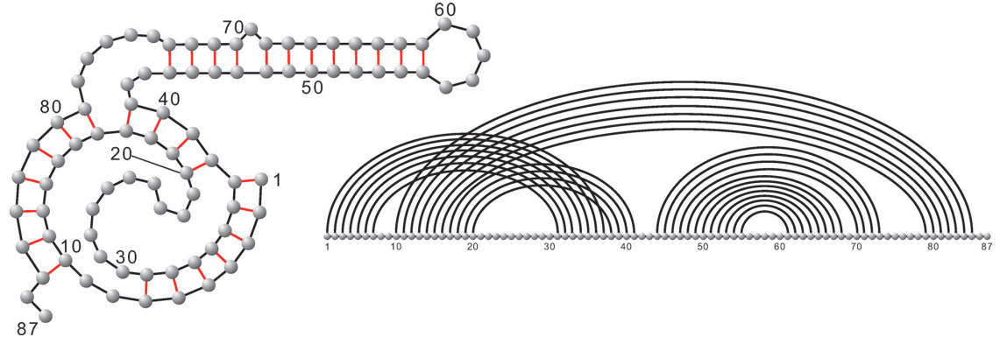
Fig a: A picture showing how RNA is related to k-noncrossing matching from this paper. 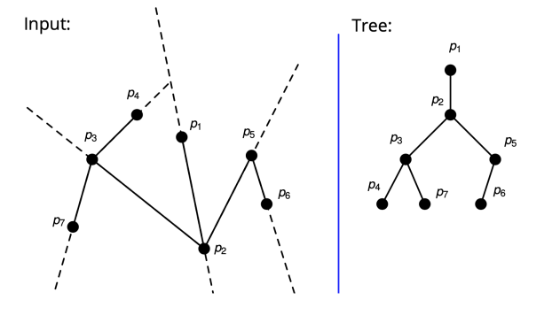
Fig b: A figure illustrating a conceptually simple(!) randomized algorithm in our paper. -
Yaqiao Li,
Undecidability of polynomial inequalities in subset densities and additive energies,
COCOON 2025,
arXiv:2505.07378.
click for a Summary:
Many results in extremal graph theory can be formulated as certain polynomial inequalities in graph homomorphism densities. Answering fundamental questions raised by Lovász, Szegedy and Razborov, Hatami and Norine proved that determining the validity of an arbitrary such polynomial inequality in graph homomorphism densities is undecidable. We observe that many results in additive combinatorics can also be formulated as polynomial inequalities in subset's density and its variants. Based on techniques introduced in Hatami and Norine, together with algebraic and graph construction and Fourier analysis, we prove similarly two theorems of undecidability, thus showing that establishing such polynomial inequalities in additive combinatorics are inherently difficult in their full generality. -
Yaqiao Li, Pierre McKenzie,
Perspective on complexity measures targeting read-once branching programs,
Information and Computation (2024),
arXiv:2305.11276.
click for a Summary:
Branching program (aka, binary decision diagram) is a more flexible counterpart of decision tree that represents/computes Boolean functions. It is: (i) a basic model for studying computational space, (ii) closely related to pseudorandomness, (iii) a fundamental data structure, (iv) useful to synthesize circuits and in formal verification, etc.This paper studied the minimum size of read-once branching programs from the perspective of proposing lower bound complexity measures, and demonstrated their strengths as well as limitations, such as on the Tseitin formula (which is applicable in proof complexity), and on the Tree Evaluation Problem (which is studied for understanding a fundamental open problem in complexity: Logspace vs Polytime), etc. We also derive an exponential lower bound for non-deterministic read-k branching programs for the P-complete GEN function.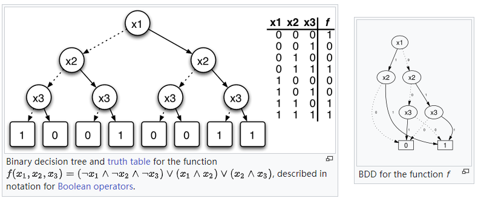
Fig a: A decision tree (left) and a branching program (right). Picture from wikipedia. 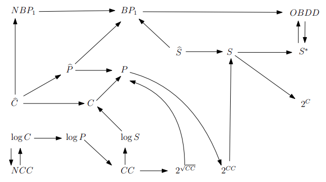
Fig b: A figure in our paper comparing different complexity measures. -
Yaqiao Li,
Denis Pankratov,
Online Vector Bin Packing and Hypergraph Coloring Illuminated: Simpler Proofs and New Connections,
LAGOS 2023,
arXiv:2306.11241.
click for a Summary:
Bin packing is a classical NP-complete optimizaiton problem that is also of practical importance such as in loading cargo for shipping, creating file backups in media, etc.This paper introduced the online incidence matrix associated with the online hypergraph, which naturally led to a simple reduction from online hypergraph coloring to online vector bin packing, thus simplified a previous breakthrough by Azar et. al.. This paper also showed a 'diverse' multi-family has an interesting intersecting property, thus resolved a conjecture on online hypergraph coloring by Nagy-György and Imreh.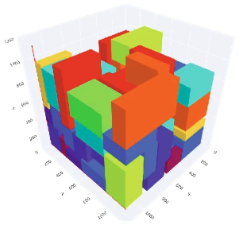
Fig a: Illustration of 3-dimensional bin packing. Figure from the paper `Hybrid approach for solving real-world bin packing problem instances using quantum annealers' by Romero et. al. 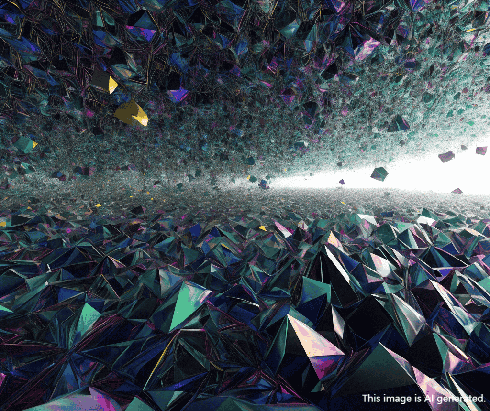
Fig b: A picture of high dimensional bin packing in AI's mind (AI generated image, credit to tongyi[通义]). 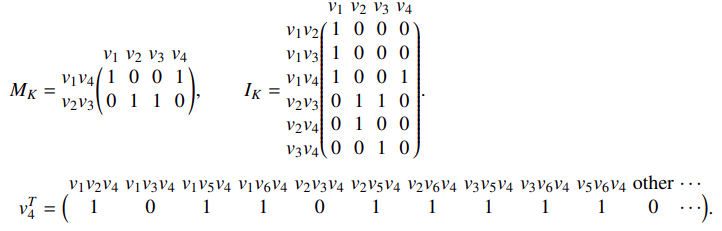
Fig c: Illustration of the online incidence matrix that we defined in this work. 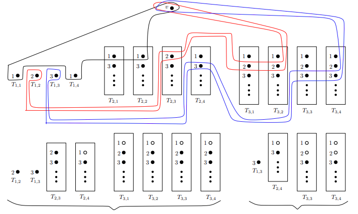
Fig d: Illustration of proving a conjecture on online hypergraph coloring by Nagy-György and Imreh. -
Yaqiao Li,
Trading information complexity for error II: the case of a large error and external information complexity,
Information and Computation (2022),
arXiv:1809.10219.
click for a Summary:
Information complexity, incorporating Shannon's information theory into communication models, is a continuous version of communication complexity. Initially, it was used to help study communication complexity, and later found many other applications such as in optimization and in circuit complexity, etc.
This paper, as the 2nd part, completed the basic theory of the dependency of information complexity on the error allowed in computation. This in particular led to an an accurate formula of error-allowed information complexity of XOR function for a special distribution.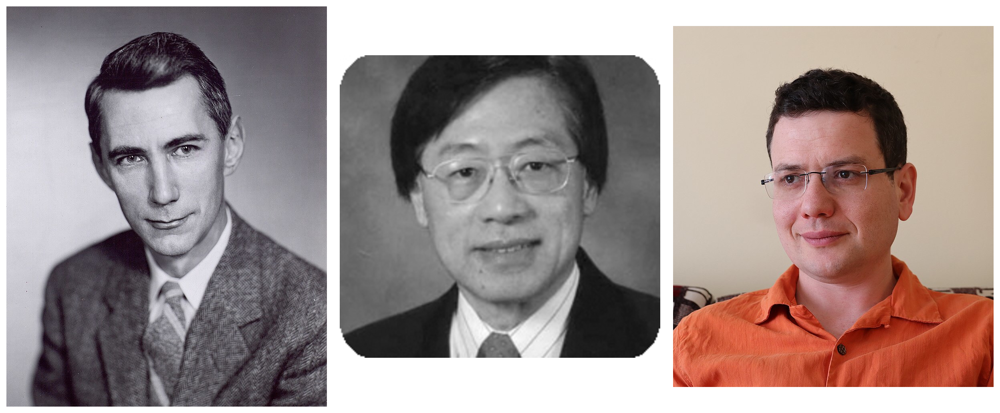
Fig a: Shannon, Yao, Braverman. Photo from wikipedia and amturing.acm.org. 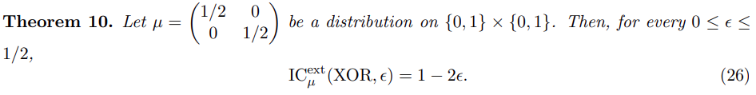
Fig b: An equality for information complexity of XOR function. 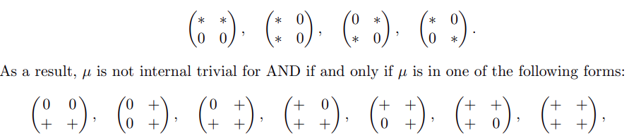
Fig c: A snapshot of analysis of information complexity of AND function. -
Yuval Dagan,
Yuval Filmus,
Hamed Hatami,
Yaqiao Li,
Trading information complexity for error,
CCC 2017, Theory of Computing Vol 14 (2018) Article 6 pp. 1-73,
arXiv:1611.06650.
click for a Summary:
Information complexity, incorporating Shannon's information theory into communication models, is a continuous version of communication complexity. Initially, it was used to help study communication complexity, and later found many other applications such as in optimization and in circuit complexity, etc.This paper, as the 1st part, initiated the basic theory of the dependency of information complexity on the error allowed in computation. This led to a more accurate formula of the randomized communication complexity of the important disjointness function, and a solution of an open problem of Braverman.Fig a: Shannon, Yao, Braverman. Photo from wikipedia and amturing.acm.org. 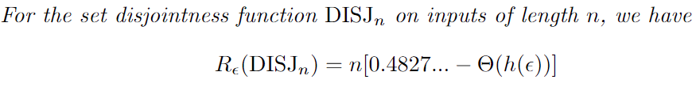
Fig b: The formula for the randomized communication complexity of the disjointness function. 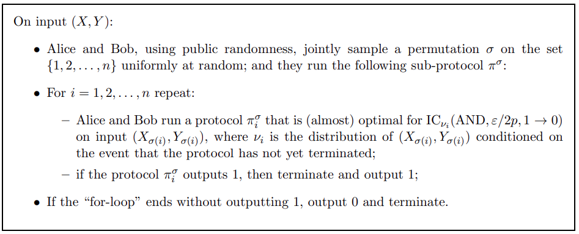
Fig c: A communication protocol with economic information cost for the disjointness function. -
Hamed Hatami,
Pooya Hatami,
Yaqiao Li,
A characterization of functions with vanishing averages over products of disjoint sets,
European J. Combin., vol 56 (2016) 81–93,
arXiv:1411.2314.
click for a Summary:
Random graph is an important model in mathematics, physics, computer science, and in studying epidemics such as COVID-19. The Erdős–Rényi random graph has its edges generated independently with some probability p. A graph is quasi-random if it has similar statistics of subgraph-counts with the Erdős–Rényi random graph, e.g., the number of triangles should be close to n^3 p^3.Although graphs seem combinatorial in nature, this paper used an analytic tool called Walsh expansion to understand the structure of functions satisfying certain integration property, the structure discovered led to resolving some of the conjectures on quasi-random graphs by Janson and Sós.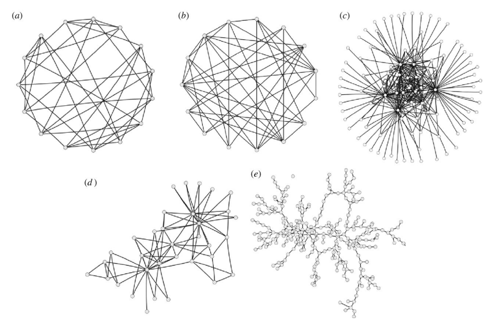
Fig a: Various random networks, picture from 'Random Networks and their Applications to the COVID-19 Pandemic' by Joseph Sheely. 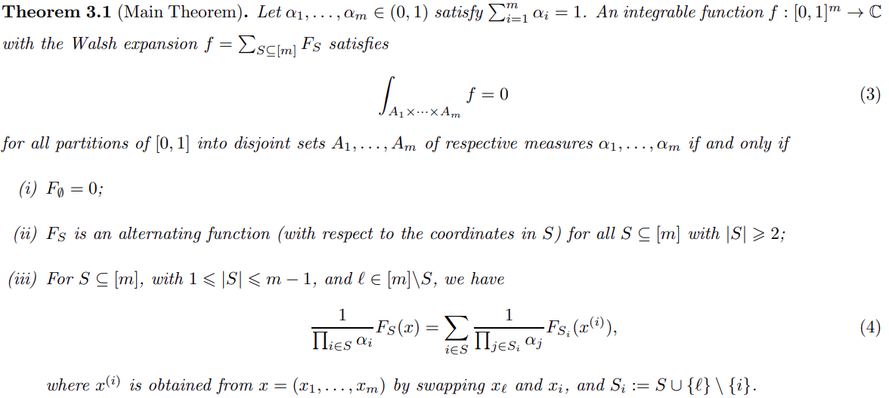
Fig b: The structure theorem. 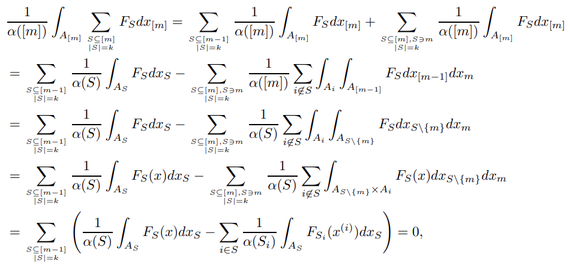
Fig c: A snapshot of the proof.